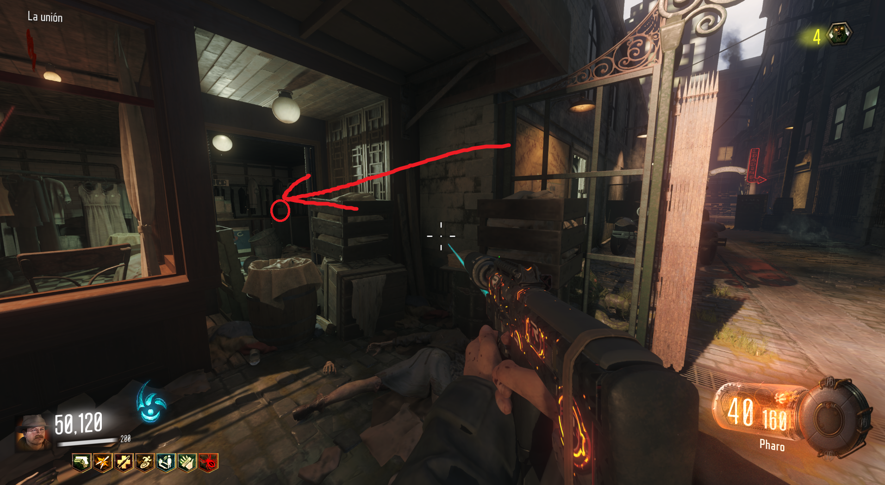
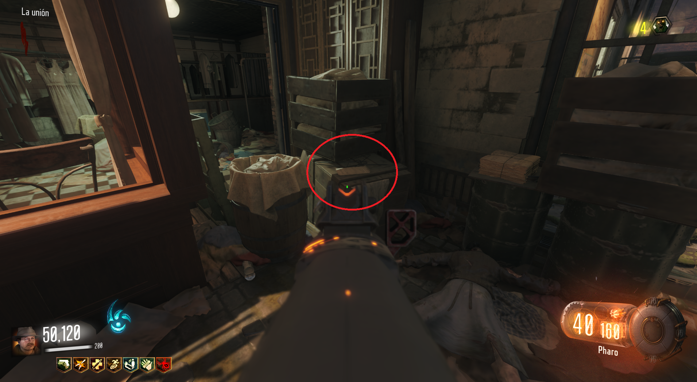

Con este truco conseguiremos 500 puntos según empecemos nuestra partida.
Con una granada, calcularemos el tiempo exacto para que explote en ese abrigo. Con Semtex es mucho más fácil si tenemos Widows Wine.

Si lo hemos hecho bien, aparecerá esta nota que al recogerla, nos dará los 500 puntos.
